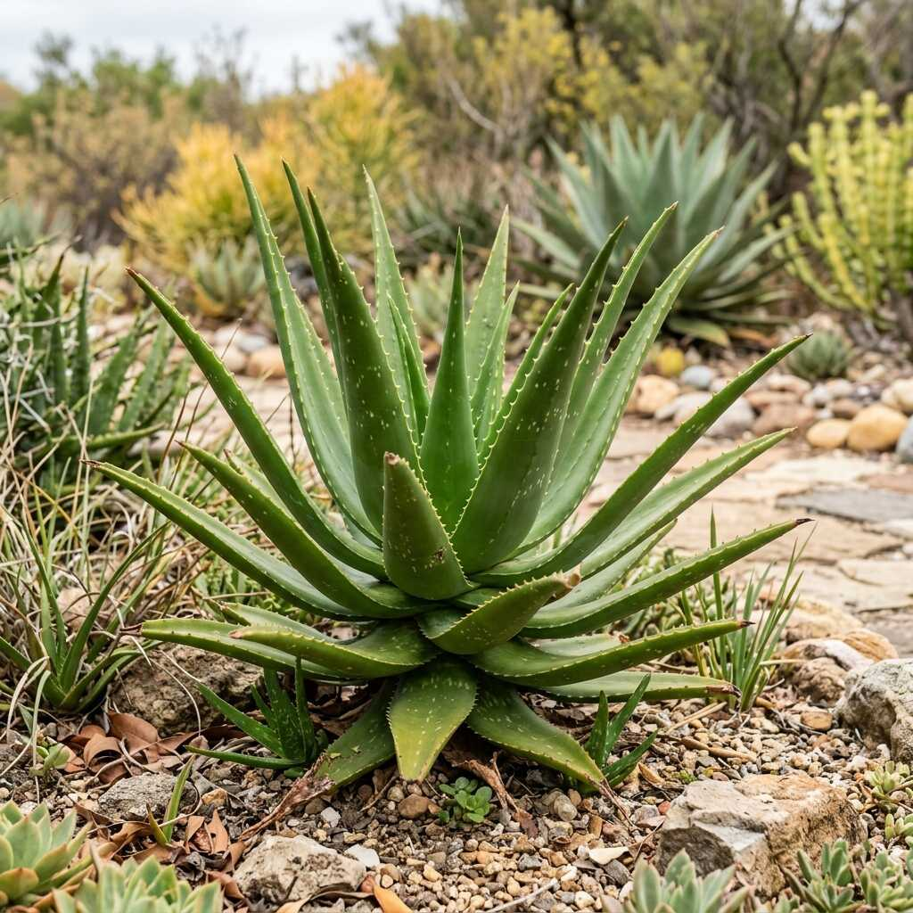
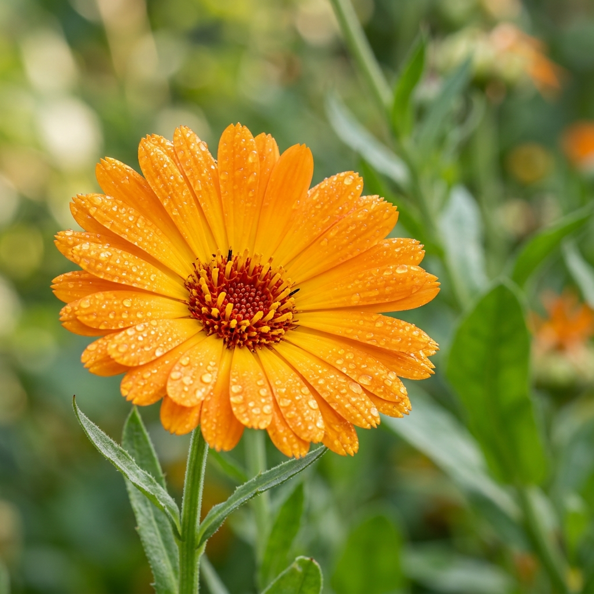
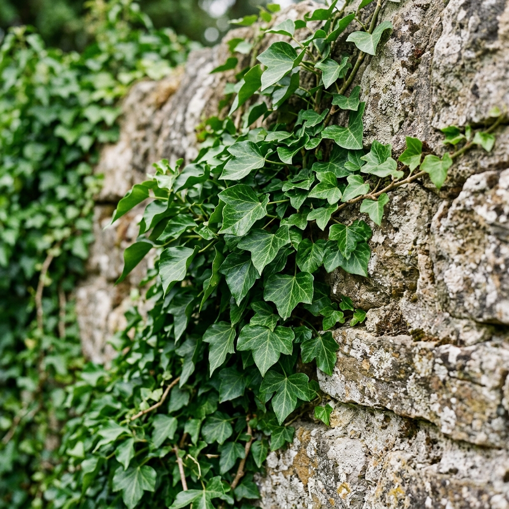
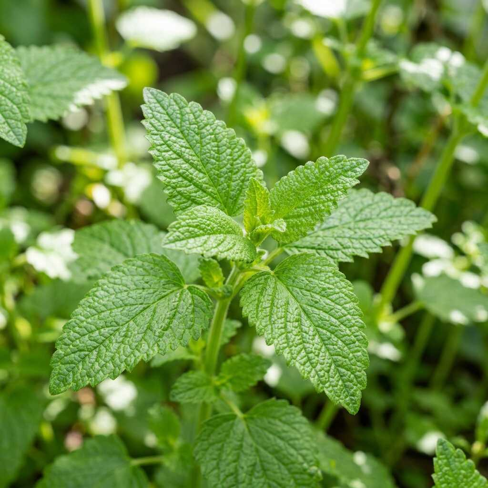
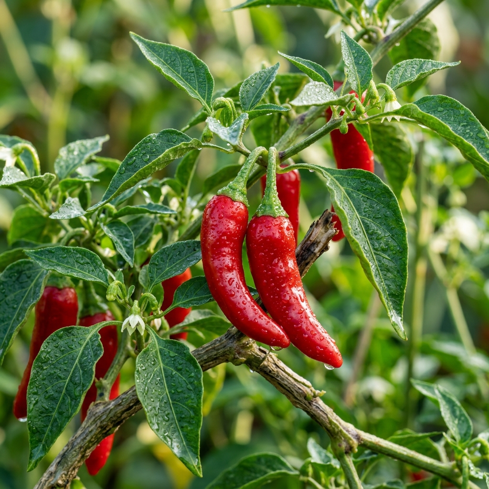
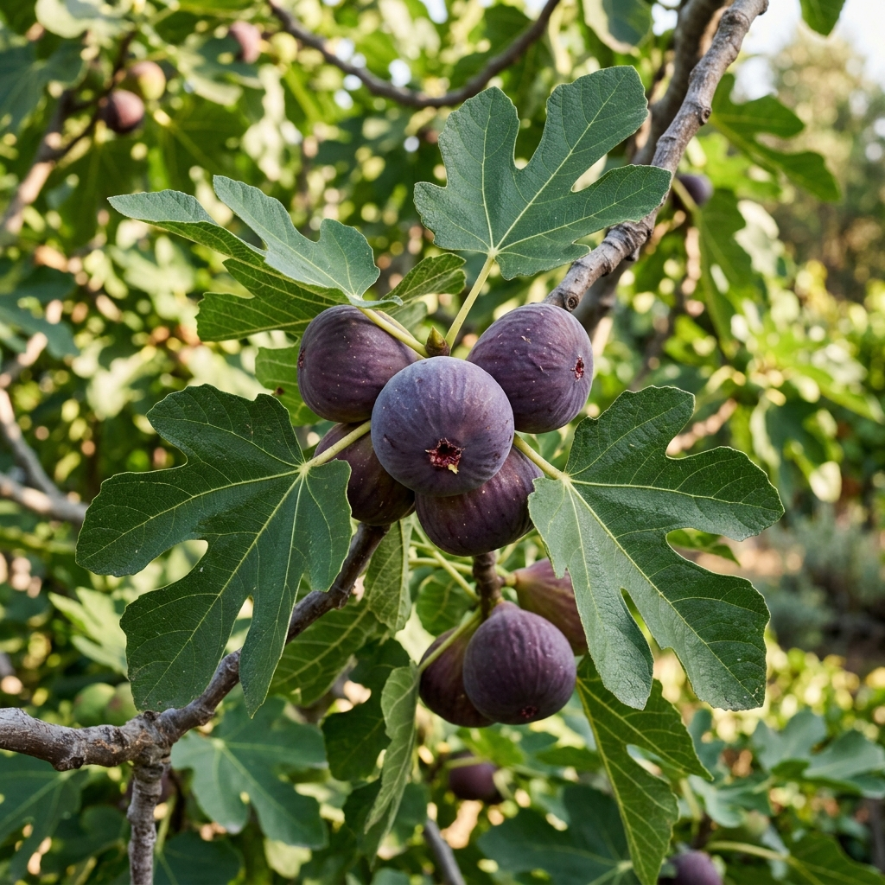

Catálogo de Especies del Vivero
Explora la clasificación completa de las especies disponibles en nuestro vivero: plantas de semisombra, sol directo, cactus, suculentas, plantas de sombra, árboles y frutales.
Plantas de Uso Médico
Evidencia clínica rigurosa, metanálisis y revisiones sistemáticas sin omisiones. Haga clic en las tarjetas inferiores para explorar en detalle cada estudio y su evidencia científica.

Aloe Vera
Aloe vera

Caléndula
Calendula officinalis

Hiedra
Hedera helix
Lavanda
Lavandula angustifolia

Toronjil
Melissa officinalis

Chile / Capsaicina
Capsicum annuum

Higo
Ficus carica
Aloe Vera
1. Identificación de la Fuente de Evidencia
2. Alcance del Estudio
- Criterios de Elegibilidad: Ensayos controlados aleatorizados (ECA) sobre Aloe vera (geles, mucílago, apósitos o combinaciones) en heridas agudas o crónicas.
- Población: Pacientes con heridas agudas (laceraciones, incisiones quirúrgicas, quemaduras) y heridas crónicas (heridas infectadas, úlceras arteriales y venosas, úlceras por presión, heridas quirúrgicas por intención secundaria).
- Intervención: Productos derivados del Aloe vera (mucílago, geles tópicos, apósitos) o combinaciones con otros apósitos.
- Comparadores: Cuidado estándar, sulfadiazina de plata, otros apósitos.
- Desenlace Principal: Medida objetiva de cicatrización (proporción de heridas completamente curadas o tiempo hasta la curación completa).
- Bases Buscadas: Registro Especializado del Grupo Cochrane de Heridas, CENTRAL, Ovid MEDLINE, Ovid EMBASE, Ovid AMED, EBSCO CINAHL.
- Período de Búsqueda: Hasta septiembre 2011 (sin restricción de idioma ni fecha).
- Universo de Evidencia Analizada: 7 ECA elegibles, con un total de 347 participantes.
3. Resumen de Hallazgos por Tipo de Herida
| Tipo de herida | Comparador | Resultado | Estimación del efecto (IC 95%) | Dirección del efecto |
|---|---|---|---|---|
| Quemaduras (aguda) | Sulfadiazina de plata | Curación completa | RR 1,41 (0,70 a 2,85) | Sin diferencia significativa |
| Post-hemorroidectomía (aguda) | Cuidado estándar | Tiempo de curación | RR 16,33 días (3,46 a 77,15) | Reducción del tiempo de curación |
| Biopsias de piel (aguda) | Cuidado estándar | Proporción de curados | Sin diferencia reportada | Sin diferencia significativa |
| Úlceras por presión (crónica) | Comparador no especificado | Cicatrización | RR 0,10 (−1,59 a 1,79) | Sin diferencia significativa |
| Heridas quirúrgicas por intención secundaria (crónica) | Cuidado estándar | Tiempo de curación | DM 30 días (7,59 a 52,41) | Retraso significativo de la cicatrización |
4. Evaluación de la Calidad de la Evidencia
Resultados a interpretar con extrema precaución.
- Pequeño tamaño muestral (347 participantes en total, distribuidos en 7 ensayos).
- Alto riesgo de sesgo en la mayoría de los ensayos incluidos.
- Heterogeneidad clínica que impidió la combinación estadística de resultados.
- Resultados contradictorios entre ensayos y tipos de heridas.
- Intervalos de confianza amplios que indican imprecisión.
5. Síntesis Interpretativa de Resultados
- Sobre la eficacia en heridas agudas: El Aloe vera no demostró superioridad frente a sulfadiazina de plata en quemaduras (RR 1,41; IC 95% cruza la unidad). Se observó una reducción en el tiempo de curación tras hemorroidectomía, aunque con un intervalo de confianza extremadamente amplio (3,46 a 77,15 días), lo que limita su precisión y aplicabilidad clínica. En biopsias de piel no se identificó diferencia en la proporción de pacientes completamente curados.
- Sobre la eficacia en heridas crónicas: No se detectaron diferencias estadísticamente significativas en úlceras por presión. En heridas quirúrgicas por intención secundaria, el Aloe vera retrasó significativamente la cicatrización en 30 días (IC 95%: 7,59 a 52,41), un hallazgo que sugiere un posible efecto deletéreo en este contexto clínico específico.
- Sobre la seguridad: La revisión no reportó un análisis sistemático de eventos adversos dentro del resumen, por lo que el perfil de seguridad no puede establecerse de forma concluyente a partir de esta fuente.
6. Conclusión Clínica (Declaración formal de los autores)
"Actualmente falta evidencia de ensayos clínicos de alta calidad que respalde el uso de agentes tópicos de Aloe vera o apósitos de Aloe vera como tratamientos para heridas agudas y crónicas."
Implicación para la toma de decisiones: Con base en esta revisión sistemática Cochrane, la evidencia disponible no permite avalar de forma concluyente el uso del Aloe vera como tratamiento para heridas agudas o crónicas. Los resultados son heterogéneos, provienen de ensayos de baja calidad metodológica y, en al menos un escenario clínico (heridas quirúrgicas por intención secundaria), se documentó un retraso significativo en la cicatrización. Por tanto, su uso institucional o protocolario debería condicionarse a la generación de nueva evidencia procedente de ECA de alta calidad, con tamaño muestral adecuado, ocultamiento de asignación, cegamiento y desenlaces estandarizados.
7. Tabla de artículos
| Título del artículo | Revista / Base | Enfoque terapéutico | Enlace |
|---|---|---|---|
| Revisión de la aloe vera (Barbadensis Miller) en la dermatología actual | SciELO Argentina | Dermatología, cicatrización | https://www.scielo.org.ar/scielo.php?pid=S1851-300X2009000400004&script=sci_arttext |
| Aplicación terapéutica del Aloe vera L. en Odontología | SciELO Venezuela | Uso bucodental | http://ve.scielo.org/scielo.php?script=sci_arttext&pid=S1316-71382013000300007 |
| Efecto de un enjuague bucal compuesto de Aloe Vera en la placa | SciELO Venezuela | Antiplaca bucal | http://ve.scielo.org/scielo.php?script=sci_arttext&pid=S0001-63652001000200004 |
| Evaluación in vitro de dos extractos de Aloe vera en bacterias | SciELO Venezuela | Actividad antibacteriana | http://ve.scielo.org/scielo.php?script=sci_arttext&pid=S1316-71382016000300009 |
| Eficacia farmacológica del aloe vera en la cicatrización de heridas | SciELO Perú | Cicatrización de heridas | http://www.scielo.org.pe/scielo.php?script=sci_arttext&pid=S2308-05312023000100110 |
| El uso terapéutico del Aloe Vera en las Úlceras Por Presión (UPP) | Redalyc (Rev. CENIC, Cuba) | Úlceras por presión | https://www.redalyc.org/pdf/1812/181220509066.pdf |
| Efectividad de la sábila (aloe vera) en el tratamiento de las heridas | Redalyc (Investigación Valdizana, Perú) | Cicatrización de heridas | https://www.redalyc.org/pdf/5860/586061883010.pdf |
| El gel de Aloe vera: estructura, composición química, procesamiento, actividad biológica | SciELO México | Composición y actividad biológica | http://www.scielo.org.mx/scielo.php?script=sci_arttext&pid=S1665-27382012000100003 |
| Aloe vera (Aloe barbadensis Miller) como componente de alimentos funcionales | SciELO Chile (Rev. Chil. Nutr.) | Composición farmacológica | https://www.scielo.cl/scielo.php?script=sci_arttext&pid=S0717-75182005000300005 |
Caléndula
1. Fuente de Evidencia y Objetivo
Franzen, F. de L., Rodríguez de Oliveira, M. S., Lidório, H. F., Menegaes, J. F., & Fries, L. L. M. (2019). Composición química de pétalos de flores de rosa, girasol y caléndula para su uso en la alimentación humana. Ciencia y Tecnología Agropecuaria, 20(1), 125-135. DOI Link
Objetivo del Estudio:El estudio tuvo como finalidad caracterizar químicamente los pétalos de tres especies florales, con un enfoque específico en la caléndula (Calendula officinalis L.), para validar su aplicación segura y nutricional en la alimentación humana.
2. Perfil Nutricional Cuantificado de la Caléndula
El análisis fisicoquímico (en base húmeda) por cada 100 g demuestra:
- Humedad: 89,34 % (Alto contenido de agua, favorece la hidratación y el tránsito intestinal).
- Valor Calórico Bruto: 45,52 kcal / 100 g (Alimento de bajo valor calórico, ideal para dietas de control de peso).
- Extracto Etéreo (Lípidos/Aceites esenciales): 1,32 % (El más alto entre las flores evaluadas, indicando presencia de aceites esenciales y pigmentos beneficiosos, manteniéndose dentro de límites saludables).
- Carbohidratos: 5,62 %.
- Proteína bruta: 1,20 %.
- Fibra bruta: 1,59 %.
- Cenizas (Minerales): 0,72 % (Indica la presencia de minerales esenciales).
3. Usos y Aplicaciones Avalados
- Culinarío: Sus pétalos son ricos en carotenoides y aceites esenciales, ofreciendo un paladar picante. Se avala su uso en arroces, pescados, quesos, mantequillas, yogures, tortillas y como sustituto natural del sabor del azafrán. También se valida su uso en adornos para pasteles y platos dulces/salados.
- Saludable: Al ser clasificada como un alimento de bajo valor calórico (grupo A de glúcidos), se recomienda para la constitución de dietas especiales y prevención de enfermedades crónico-degenerativas.
4. Consideraciones de Seguridad y Conclusión
Es obligatoria la retirada del polen de las flores de caléndula, ya que este componente puede causar reacciones alérgicas en individuos sensibles.
La evidencia científica generada por Franzen et al. (2019) concluye que los pétalos de Calendula officinalis poseen nutrientes esenciales para una dieta sana, con características químicas similares a hortalizas convencionales (como el brócoli o la coliflor) y pequeñas frutas (como el arándano). Por lo tanto, se avala a la caléndula como una materia prima prometedora y segura para la alimentación humana, ya sea para consumo in natura o como ingrediente en formulaciones alimentarias.
5. Tabla de artículos
| Título del artículo | Revista / Base | Enfoque terapéutico | Enlace |
|---|---|---|---|
| Calendula officinalis L. en el tratamiento tópico de la candidiasis vaginal recurrente | Redalyc (BLACPMA) | Antimicótico tópico | https://www.redalyc.org/pdf/856/85615225005.pdf |
| Plantas medicinales españolas. Calendula officinalis L. (Asteraceae) | Dialnet (Medicina Naturista, España) | Monografía farmacológica | https://dialnet.unirioja.es/descarga/articulo/2050731.pdf |
| Extracto acuoso de Calendula officinalis. Estudio preliminar de sus propiedades | SciELO Cuba (Rev. Cubana Plant. Med.) | Antimicótico, fitoquímica | http://scielo.sld.cu/scielo.php?script=sci_abstract&pid=S1028-47962000000100008 |
| Efectividad terapéutica de la jalea de caléndula al 1 % en estomatitis aftosa recurrente | SciELO Cuba | Estomatitis aftosa | http://scielo.sld.cu/scielo.php?script=sci_arttext&pid=S1029-30192021000300596 |
| Eficacia de protectores cutáneos y Calendula officinalis para radiodermatitis | SciELO Brasil (Rev. Latino-Am. Enfermagem) | Radiodermatitis | https://www.scielo.br/j/reben/a/JFZQfd53VjNDhsphxLxxJ7D/abstract/?format=html&lang=es |
| Caracterización de una jalea de Calendula officinalis L. al 1 % para uso estomatológico (UPP) | SciELO España (Rev. OFIL) | Desarrollo farmacéutico | http://scielo.isciii.es/scielo.php?script=sci_arttext&pid=S2340-98942018000400201 |
| Eficacia de la pomada de caléndula 20 % en el tratamiento de la psoriasis | SciELO Colombia (Vitae) | Psoriasis | http://www.scielo.org.co/scielo.php?script=sci_arttext&pid=S0034-74182023000301320 |
Hiedra
Ficha de Evidencia Científica
- Planta Medicinal / Principio Activo: Extracto seco de hoja de Hiedra (Hedera helix L.), estandarizado como EA 575.
- Indicación Avalada: Tratamiento sintomático de la tos aguda asociada a infecciones del tracto respiratorio (ITRs) en adultos.
- Nivel de Evidencia: Alto (Metaanálisis de Ensayos Clínicos Randomizados, Doble Ciego y Controlados con Placebo - ECR).
- Fuente Bibliográfica:
- Revista: Scientific Reports (Nature Portfolio), 2022; 12:20041.
- Autores: Völp A, Schmitz J, Bulitta M, et al.
- Título original: Ivy leaves extract EA 575 in the treatment of cough during acute respiratory tract infections: meta-analysis of double-blind, randomized, placebo-controlled trials.
1. Diseño del Estudio y Población
- Tipo de análisis: Metaanálisis de datos individuales de pacientes (IPD) de 2 ensayos clínicos (Estudio A y Estudio B).
Nota: Este diseño es considerado el "estándar de oro" para evaluar eficacia, superando a las revisiones sistemáticas convencionales. - Población: 390 adultos ambulatorios con tos aguda derivada de ITRs.
- Intervención: 105 mg/día de extracto seco de hiedra (EA 575) durante 7 días, frente a placebo.
- Tamaño del efecto: Hedges' g = 0.77 (Efecto clínicamente moderado a grande).
2. Resultados de Eficacia Clave
El extracto de hiedra EA 575 demostró superioridad estadística y clínica frente al placebo en todos los parámetros evaluados:
- Inicio de acción rápido: Reducción significativa de la severidad de la tos (medida por la escala BSS) observable a partir del segundo día de tratamiento (p < 0.001).
- Aceleración de la recuperación: La mejoría clínica lograda con EA 575 a los 4 días de tratamiento fue equivalente a la que logró el grupo placebo tras 7 días (fin del tratamiento).
- Resolución de la tos: Al finalizar el tratamiento (día 7), el 18.1% de los pacientes tratados con hiedra estaban libres de tos, frente al 9.3% del placebo. Tras una semana sin tratamiento (día 14), la tasa de pacientes sin tos ascendió al 56.2% (hiedra) vs. 25.6% (placebo).
- Tasa de respuesta clínica: El 93.4% de los pacientes tratados con EA 575 logró una mejoría clínicamente detectable (reducción de al menos 4 puntos en la escala BSS), frente al 76.5% del grupo placebo (p < 0.001).
- Percepción del paciente: El 80.2% de los pacientes calificó la eficacia del tratamiento como "buena o muy buena" (vs. 40.1% con placebo).
3. Perfil de Seguridad y Tolerabilidad
- Excelente tolerabilidad: La incidencia de eventos adversos (EA) fue comparable al grupo placebo (13.2% para EA 575 vs. 15.4% para placebo).
- Sin señales de alerta: No se reportaron eventos adversos graves ni severos. El evento más frecuente fue el empeoramiento transitorio de la tos, el cual fue ligeramente menor en el grupo de hiedra que en el de placebo.
"El extracto seco de hoja de Hedera helix L. (EA 575) cuenta con evidencia científica de alta calidad que avala su uso para la tos aguda. Su administración durante 7 días reduce rápidamente la intensidad de la tos, acelera la recuperación en aproximadamente 3 días respecto a la evolución natural de la enfermedad y duplica la tasa de pacientes libres de tos a las dos semanas. Su perfil de seguridad es indistinguible del de un placebo..."
4. Tabla de artículos
| Título del artículo | Revista / Base | Enfoque terapéutico | Enlace |
|---|---|---|---|
| Plantas medicinales con actividad expectorante: hojas de hiedra | Dialnet (Panorama Actual Med., España) | Expectorante, antitusivo | https://dialnet.unirioja.es/servlet/articulo?codigo=5973900 |
| Evolución clínica de la bronquitis aguda en niños colombianos tratados con Hedera helix EA575 | SciELO Colombia (Vitae) | Bronquitis aguda pediátrica | http://www.scielo.org.co/scielo.php?pid=S0034-74182023000200781&script=sci_arttext |
| Antitusígenos naturales | SciELO Uruguay (Arch. Pediatr. Urug.) | Antitusivo pediátrico | http://www.scielo.edu.uy/scielo.php?script=sci_arttext&pid=S1688-12492021000401808 |
| La hoja de hiedra en el tratamiento de las afecciones de vías respiratorias | Fitoterapia.net (Offarm) | Revisión respiratoria | https://www.fitoterapia.net/php/descargar_documento.php? id=4451&doc_r=sn&num_volumen=28&secc_volumen=5961 |
| Hedera Helix y el control de la tos (revisión de evidencia clínica) | Eurofarma | Antitusivo, bronquitis | https://www.eurofarma.com.ec/articulos/hedera-helix-y-el-control-de-la-tos |
Lavanda
1. Fuente de Evidencia y Producto
- Propósito: Avalar el uso de Lavandula angustifolia (específicamente el extracto estandarizado Silexan) para el tratamiento de trastornos de ansiedad.
- Fuente Bibliográfica:
- Revista: European Archives of Psychiatry and Clinical Neuroscience (2023; 273(7):1615–1628).
- Tipo de estudio: Meta-análisis de Ensayos Clínicos Aleatorizados (ECA), doble ciego y controlados con placebo.
- Autores principales: Dold, M., Bartova, L., Volz, H.P., et al.
- Identificación del Producto Fitoterapéutico:
- Planta: Lavandula angustifolia (Lavanda).
- Forma farmacéutica avalada: Aceite esencial por vía oral, altamente estandarizado bajo el nombre patentado Silexan (cumple y supera los requisitos de la Farmacopea Europea).
- Posología evaluada: 80 mg una vez al día (1 cápsula).
2. Población y Resultados de Eficacia
Adultos ambulatorios (18-65 años) diagnosticados con:
- Ansiedad subumbral (subsyndromal anxiety).
- Trastorno Mixto de Ansiedad y Depresión (MADD).
- Trastorno de Ansiedad Generalizada (TAG / GAD).
- Muestra total analizada: 1.213 pacientes.
Tras 10 semanas de tratamiento, Silexan demostró superioridad estadística y clínica frente al placebo:
- Reducción de la ansiedad: Disminución promedio de 2.9 puntos en la escala HAMA (Hamilton Anxiety Rating Scale) respecto al placebo.
- Tasa de respuesta: El 51.8% de los pacientes tratados con lavanda lograron una reducción ≥50% en la escala HAMA, frente al 38.8% del grupo placebo (Número Necesario a Tratar - NNT = 8).
- Mejoría global: Los pacientes tratados tuvieron un 51% más de probabilidades de mostrar una mejoría "mucho o muy mejorada" según la escala CGI.
- Calidad de vida: Mejoría estadísticamente significativa tanto en el componente de salud física como mental (cuestionario SF-36).
- Comparación con fármacos convencionales: El tamaño del efecto de Silexan (SMD = 0.35) se sitúa en el mismo rango de eficacia que los fármacos de primera línea actuales (ISRS e IRSN como la venlafaxina o sertralina).
3. Perfil de Seguridad y Tolerabilidad (Ventaja Clínica)
Este es el argumento principal para elegir la planta frente a psicotrópicos sintéticos:
- Sin diferencias frente al placebo: No hubo diferencias significativas en la aparición de eventos adversos (EA), eventos adversos graves (EAG), ni en el abandono del tratamiento por efectos secundarios.
- Sin sedación: A diferencia de las benzodiacepinas, no deprime el Sistema Nervioso Central ni afecta la capacidad para conducir o realizar actividades diarias.
- Sin síndrome de abstinencia: No produce síntomas de retirada ni dependencia, incluso si se suspende abruptamente.
- Sin interacciones clínicas relevantes: No inhibe ni induce las enzimas del citocromo P450 (CYP1A2, 2C9, 2C19, 2D6, 3A4) y no interactúa con anticonceptivos orales.
- Efectos secundarios leves: Los únicos efectos reportados fueron leves y transitorios (ej. eructos con sabor a lavanda o náuseas leves).
4. Conclusión para Avalar su Uso
El presente meta-análisis proporciona evidencia robusta de alto nivel científico que respalda la utilización del aceite esencial estandarizado de Lavandula angustifolia (Silexan a 80 mg/día) como tratamiento de primera línea para los trastornos de ansiedad.
Su uso está justificado por ofrecer una eficacia equivalente a los antidepresivos convencionales (ISRS/IRSN), pero con un perfil de seguridad equiparable al placebo, evitando problemas comunes de la psiquiatría estándar como la sedación, el aumento de peso, la disfunción sexual, el riesgo de dependencia o el síndrome de discontinuación.
4. Tabla de artículos
| Título del artículo | Revista / Base | Enfoque terapéutico | Enlace |
|---|---|---|---|
| Métodos de extracción e identificación de bioactivos de Lavandula officinalis y su potencial uso sedante | SciELO México (Rev. Mex. Cienc. Farm.) | Sedante | http://www.scielo.org.mx/scielo.php?script=sci_arttext&pid=S1870-01952013000100008 |
| Aceite esencial de lavanda para el dolor espinal en mujeres obesas: ensayo clínico | SciELO Brasil (Coluna/Columna) | Dolor espinal | https://www.scielo.br/j/coluna/a/3gM4vsMW4W7x6NQmQFxhz6Q/abstract/?lang=es |
| Usos terapéuticos de la aromaterapia con lavanda (Lavandula angustifolia). Revisión integrativa | Enfermería21 (ALADefe) | Ansiedad, sueño, dolor | https://www.enfermeria21.com/revistas/aladefe/articulo/323/usos-terapeuticos-de-la-aromaterapia-con- lavanda-lavandula-angustifolia-revision-integrativa-de-la-literatura |
| Estudio observacional en pacientes con ansiedad tratados con aceite esencial de lavanda | Fitoterapia.net (Rev. OFIL) | Ansiedad | https://www.fitoterapia.net/php/descargar_documento.php?id=11462&doc_r=n |
| Respuesta ligada al género ante el tratamiento de la ansiedad con Lavandula angustifolia | Dialnet (Ciencia Latina) | Ansiedad pediátrica | https://dialnet.unirioja.es/descarga/articulo/9566048.pdf | Aceites esenciales y calidad de vida: percepción del efecto | SciELO Colombia (Rev. Fac. Med. Hum.) | Bienestar, estrés | http://www.scielo.org.co/scielo.php?script=sci_arttext&pid=S2256-56552024000100004 | Producción in vitro de los componentes principales del aceite esencial de Lavandula angustifolia | SciELO México | Biotecnología, composición | http://www.scielo.org.mx/scielo.php?script=sci_arttext&pid=S0370-59432012000200002 | Efecto de la relajación muscular progresiva combinada con aromaterapia de lavanda en insomnio en hemodiálisis | SciELO España | Insomnio | http://scielo.isciii.es/scielo.php?script=sci_arttext&pid=S2254-28842021000100004 |
Toronjil / Melisa
1. Contexto e Identificación
Paracha, M. A., Khan, S. A. J., Zarkaish, R., Fazal, F., Khan, M. D., & Ahmad, M. (2025). Effectiveness of Lesser Known Herbal Sedatives for Insomnia: A Systematic Review and Meta-Analysis. Preprint. DOI Link (Protocolo PROSPERO: CRD420251101795).
Contexto dentro de la revisión:A pesar de ser una planta con uso histórico, el artículo la clasifica dentro del grupo de "sedantes herbales menos conocidos" que habían recibido poca cobertura metodológica en comparación con la valeriana o la manzanilla. El objetivo de esta revisión sistemática fue precisamente darles a plantas como la Melisa el rigor de un metaanálisis para evaluar su verdadera eficacia frente a placebos o cuidado habitual. A pesar de ser un artículo en preimpresión, esta revisión sistemática aporta datos cuantitativos valiosos basados en una metodología rigurosa (directrices PRISMA 2020 y protocolo pre-registrado).
2. Volumen de Estudios y Datos Estadísticos
La eficacia de Melissa officinalis como intervención individual (no mezclada con otras plantas) fue evaluada en 4 Ensayos Clínicos Aleatorizados (ECA). Los tratamientos en estos estudios tuvieron una duración estándar corta, oscilando entre 2 y 4 semanas, lo que indica que los beneficios observados se dan en un periodo de tiempo rápido.
Los datos estadísticos (El argumento principal):En el análisis de subgrupos dedicado exclusivamente a esta planta, los resultados fueron contundentes:
- Magnitud del efecto: Diferencia de Medias Estandarizada (DME) de -0.66 (IC 95%: -0.92 a -0.40). En términos prácticos, una DME de -0.66 se considera un efecto de tamaño moderado, lo que significa que la mejoría en la calidad del sueño es clínicamente perceptible para el paciente.
- Significancia estadística: El valor p < 0.00001 descarta casi por completo que el resultado sea producto del azar.
3. La Ventaja Competitiva de la Melisa: Heterogeneidad Cero (I² = 0%)
Si tienes que defender la Melisa frente a otras plantas (como la manzanilla o la pasiflora) usando este artículo, este es tu dato definitivo:
- La manzanilla, aunque tuvo un efecto mayor (DME -1.06), tuvo una heterogeneidad del 96% (los resultados de los 10 estudios eran muy dispares entre sí).
- La Melisa obtuvo un I² = 0% (p = 0.84).
- ¿Qué significa esto en la práctica? Significa que los resultados de los 4 ensayos clínicos son virtualmente idénticos entre sí. Da igual el país, el paciente o el investigador; la Melisa responde de manera altamente predecible y uniforme. Esto es oro en investigación clínica, ya que otorga muchísima fiabilidad al resultado.
4. Evidencia Complementaria y Conclusión
Más allá de los ensayos clínicos estrictos, la revisión analizó estudios observacionales. En concreto, el estudio de Cases et al. (2011) evidenció una "mejora clínica significativa" en las puntuaciones basales de los pacientes (medida con la escala HRSD, que evalúa depresión y síntomas asociados al insomnio), reforzando la idea de que la mejora del sueño con Melisa también impacta positivamente en el estado de ánimo diurno.
Conclusión:"El uso de Melissa officinalis para el manejo del insomnio está respaldado por evidencia de certeza moderada (GRADE). A diferencia de otros fitoterápicos que muestran gran variabilidad en sus resultados, el metaanálisis demuestra que la Melisa produce una mejora moderada y consistente en la calidad del sueño (DME -0.66, p<0.00001) con una heterogeneidad nula (I²=0%). Esto la posiciona como una de las opciones herbales con mayor previsibilidad de respuesta clínica, logrando mejoras significativas en periodos cortos de 2 a 4 semanas de tratamiento."
5. Tabla de artículos
| Título del artículo | Revista / Base | Enfoque terapéutico | Enlace |
|---|---|---|---|
| Actividad antifúngica y antiaflatoxigénica de extractos de Melissa officinalis sobre Aspergillus flavus | SciELO Venezuela (Rev. Fac. Farm.) | Antifúngico | http://ve.scielo.org/scielo.php?script=sci_arttext&pid=S1315-01622013000200008 |
| Estudio comparativo entre terapia con Melissa officinalis vs. aciclovir tópico en herpes labial | SciELO Chile (RCPIRO) | Antiviral (herpes) | https://www.scielo.cl/scielo.php?script=sci_arttext&pid=s0718-381x2014000300002 |
| Caracterización farmacognóstica de Melissa officinalis L. (toronjil) | SciELO Cuba (Rev. Cubana Plant. Med.) | Farmacognosia | http://scielo.sld.cu/scielo.php?pid=S1028-47962010000400003&script=sci_abstract |
| Efecto del extracto etanólico de Melissa officinalis (toronjil) en la conducta del niño ansioso en consulta dental | Redalyc (Rev. Estomatol. Herediana, Perú) | Ansiedad dental infantil | https://www.redalyc.org/pdf/4215/421539352004.pdf |
| Efecto sedante del extracto alcohólico de hojas y flores de Melissa officinalis "toronjil" + manzanilla | BVS/LILACS | Sedante, ansiedad | https://docs.bvsalud.org/biblioref/2018/01/877383/efecto-sedante-del-extracto-alcoholico-de-hojas-y-flores-de-mel_sgYzGIh.pdf |
Chile / Capsaicina
Ficha de Evidencia Científica
- Planta / Principio Activo avalado: Capsicum spp. (Chile) / Capsaicina tópica (cremas/parches).
- Fuente de evidencia: Revisión sistemática y metanálisis publicado en The BMJ (British Medical Journal).
- Autores: Mason L, Moore RA, Derry S, Edwards JE, McQuay HJ.
- Referencia: BMJ 2004;328(7446):991. PMID: 15033881.
- Justificación del uso de la planta (Fundamento Fitoquímico y Farmacológico): El uso tópico de la planta Capsicum (chile) se justifica por la presencia de capsaicina, el compuesto responsable de su sabor picante. Su mecanismo de acción a nivel cutáneo consiste en unirse a los nociceptores, lo que genera una estimulación inicial seguida de una fase de desensibilización. Esto se produce por el agotamiento de la "sustancia P" (un neurotransmisor del dolor) y la degeneración temporal de las fibras nerviosas epidérmicas, lo que resulta en una reducción de la percepción del dolor (hipalgesia).
1. Eficacia Clínica (Datos Cuantitativos)
La revisión analizó 16 ensayos clínicos aleatorizados y doble ciego, con un total de 1.556 pacientes. Se demostró que la capsaicina es superior al placebo en dos grandes grupos de dolor crónico:
Dolor Neuropático (ej. neuropatía diabética, neuralgia postherpética):- Concentración utilizada: 0.075% (aplicada 3-4 veces al día durante 8 semanas).
- Resultado: El 60% de los pacientes tratados logró una reducción del dolor de al menos el 50%.
- Número Necesario a Tratar (NNT): 5.7 (Es decir, por cada 6 pacientes que usan la capsaicina, uno obtiene un alivio significativo que no habría logrado con placebo).
- Concentración utilizada: 0.025% o en parche (aplicado durante 4 semanas).
- Resultado: El 38% de los pacientes tratados logró una reducción del dolor de al menos el 50%.
- Número Necesario a Tratar (NNT): 8.1 (Es decir, por cada 8 pacientes, uno se beneficia significativamente).
2. Perfil de Seguridad y Tolerabilidad
- Efectos adversos locales: Son predecibles debido al mecanismo de la planta. Alrededor de un tercio de los pacientes experimenta ardor, escozor o eritema en el sitio de aplicación (NNT para daño = 2.5).
- Abandono del tratamiento: A pesar de la irritación local inicial, la tasa de abandono es baja. Solo 1 de cada 10 pacientes suspende el tratamiento por este motivo (NNT para abandono = 9.8).
- Efectos sistémicos: Son raros, lo que convierte a la capsaicina tópica en una opción segura desde el punto de vista cardiovascular o gastrointestinal.
- Nota clínica importante: Los autores destacan que estos efectos locales suelen disminuir con el uso continuado.
3. Conclusión para Avalar su Uso
A pesar de que la revisión clasifica su eficacia general como "moderada a pobre" en comparación con otros analgésicos sistémicos, el estudio concluye y avala firmemente el uso de la capsaicina derivada del Capsicum bajo la siguiente premisa clínica:
"La capsaicina tópica es útil como terapia coadyuvante o como tratamiento único para un subgrupo específico de pacientes que no responden a, o son intolerantes a, otros tratamientos convencionales para el dolor crónico."
Su principal valor clínico radica en ser una alternativa local, segura y con respaldo estadístico para pacientes refractarios, evitando los efectos secundarios sistémicos de los analgésicos orales.
4. Tabla de artículos
| Título del artículo | Revista / Base | Enfoque terapéutico | Enlace |
|---|---|---|---|
| Propiedades farmacológicas del chile (Capsicum) y sus beneficios en la salud humana: revisión bibliográfica | Dialnet (LATAM, Paraguay) | Revisión farmacológica | https://dialnet.unirioja.es/descarga/articulo/9586113.pdf |
| Efecto antifúngico de capsaicina y extractos de chile piquín | SciELO México (Rev. Mex. Fitopatol.) | Antifúngico | http://www.scielo.org.mx/scielo.php?script=sci_arttext&pid=S1405-27682012000200009 |
| Citotoxicidad y actividad antiviral de extractos de chiles (Capsicum spp.) | SciELO México (Rev. Mex. Fitopatol.) | Antiviral, citotoxicidad | http://www.scielo.org.mx/scielo.php?script=sci_arttext&pid=S1405-27682018000200273 |
| Calidad y concentración de capsaicinoides en genotipos de chile Serrano | SciELO Argentina | Capsaicinoides | https://www.scielo.org.ar/scielo.php?script=sci_arttext&pid=S1851-56572016000100005 |
| Estudio del pericarpio de chile habanero (Capsicum chinense) por espectroscopia Raman | SciELO Chile | Caracterización fitoquímica | https://www.scielo.cl/scielo.php?script=sci_arttext&pid=S0719-38902018000100068 |
| Capsaicina tópica en el tratamiento del dolor neuropático | SciELO España (Rev. Soc. Esp. Dolor) | Dolor neuropático | http://scielo.isciii.es/scielo.php?script=sci_arttext&pid=S1134-80462004000500007 |
| Potencial terapéutico de la capsaicina | idUS (Universidad de Sevilla) | Dolor neuropático, TRPV1 | https://idus.us.es/bitstreams/cba911c1-b6e7-4faf-8f5c-d8193f870cdb/download |
| Contribución al conocimiento etnobotánico del chile de agua (Capsicum annuum) en Oaxaca | SciELO México (Rev. Mex. Cienc. Agríc.) | Etnobotánica | http://www.scielo.org.mx/scielo.php?script=sci_arttext&pid=S2007-09342014000300013 |
Higo
1. Fuente, Calidad e Indicación Terapéutica
- Revista: Nutrients (Índice de impacto alto, revista de acceso abierto y rigor revisado por pares).
- Año: Octubre 2022 (DOI: 10.3390/nu14214470).
- Tipo de estudio: Ensayo Clínico Preliminar, Aleatorizado, Doble Ciego y Controlado con Placebo (ECA).
Nota: Este es el nivel de evidencia más alto y riguroso para probar la eficacia de un producto. - Muestra: 30 adultos con dermatitis atópica leve (15 grupo de intervención, 15 grupo placebo).
Alivio de los síntomas de la Dermatitis Atópica (DA) leve, una condición crónica caracterizada por piel seca, inflamación y picor intenso, para la cual los tratamientos convencionales (como corticoides tópicos) conllevan riesgos de efectos secundarios a largo plazo.
2. Evidencia de Eficacia (Resultados Clínicos)
El consumo prolongado de té de hojas de higo demostró una eficacia estadísticamente significativa frente al placebo:
- Reducción del EASI: El índice de Área y Gravedad del Eczema (EASI, por sus siglas en inglés, el estándar de medición objetiva dermatológica) disminuyó significativamente en el grupo que tomó el té desde la semana 4 de tratamiento, alcanzando su punto máximo en la semana 8 (p < 0.05).
- Tasa de éxito: 14 de los 15 participantes (93.3%) que consumieron el té mostraron una mejoría positiva en sus síntomas. En contraste, en el grupo placebo, 7 participantes empeoraron.
- Efecto dependiente del consumo continuo: Al suspender el té durante 4 semanas (semana 12 del estudio), los síntomas tendieron a reaparecer, demostrando que su ingesta sostenida es clave para mantener el beneficio.
3. Mecanismo de Acción y Dosificación
La eficacia de la hoja de Ficus carica se atribuye a su rica composición en polifenoles y flavonoides (principalmente rutina, quercetina y 8-hidroxicumarina):
- Bloqueo de la respuesta alérgica: Inhibe la unión de los anticuerpos IgE a sus receptores (FcεRI), un mecanismo de acción similar al de fármacos biológicos utilizados para el asma y la dermatitis (ej. Omalizumab).
- Acción antiinflamatoria: Suprime citocinas inflamatorias (IL-4, IL-13) involucradas en el picor y el engrosamiento de la piel.
- Formato: Infusión (té) de hojas secas procesadas (lavadas, vaporizadas y deshidratadas).
- Concentración: Equivalente a 30 mg de hoja por mL de agua.
- Dosis diaria: 500 mL al día.
4. Perfil de Seguridad y Toxicología (Punto Crítico)
El estudio demostró que el consumo prolongado del té es altamente seguro, pero destaca una advertencia fundamental para su uso comercial o terapéutico:
- Seguridad hematológica y hepática: No se observaron variaciones peligrosas en análisis de sangre y orina. Inesperadamente, se observó una mejora en marcadores de función hepática (reducción de AST, LDH y ALP) en el grupo de intervención.
Muchas variedades de higo contienen furanocumarinas (como el psoraleno), las cuales son fototóxicas y causan erupciones cutáneas al exponerse al sol, además de interactuar con medicamentos. El estudio utilizó una variedad específica ('Grise de Tarascon') libre de furanocumarinas, lo cual es un requisito indispensable para avalar su seguridad como alimento funcional o terapia.
5. Conclusión para Avalar su Uso
El presente ensayo clínico proporciona evidencia científica sólida y directa para respaldar la comercialización o recomendación del té de hojas de Ficus carica L. como un alimento funcional o terapia complementaria segura y eficaz para el alivio de la dermatitis atópica leve.
Su mecanismo de acción a nivel inmunológico, su alta tasa de éxito en la reducción objetiva del eccema y su excelente perfil de seguridad (siempre y cuando se garantice la ausencia de furanocumarinas) lo posicionan como una alternativa natural válida frente a los tratamientos farmacológicos convencionales de largo plazo.
6. Tabla de artículos
| Título del artículo | Revista / Base | Enfoque terapéutico | Enlace |
|---|---|---|---|
| Cribado fitoquímico y evaluación de la actividad antimicrobiana del extracto metanólico de Ficus carica | SciELO México (Rev. Mex. Cienc. Agríc.) | Antimicrobiano | http://www.scielo.org.mx/scielo.php?script=sci_arttext&pid=S2007-09342021000100001 |
| Reporte de caso: histología del hígado de ratas tratadas con infusión de hojas de higuera (Ficus carica) | SciELO Venezuela (Rev. Fac. Cienc. Vet.) | Toxicidad de hoja | https://ve.scielo.org/pdf/rfcv/v51n2/art05.pdf |